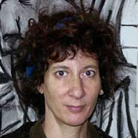
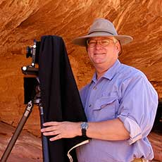

Knox College
Department of Art
and Art History
Studio Art
Art History
Faculty
Gallery
Box
Residency
Mark Holmes, MFA
Associate Professor of Art
Chair

Lynette Lombard, MFA
Associate Professor of Art
Gregory Gilbert , PhD
Associate Professor of Art History
Director of Art History Program
Tony Gant, MFA
Associate Professor of Art
Andrea Ferrigno, MFA
Assistant Professor of Art
Tim Stedman, MFA
Visiting Assistant Professor
of Art

Michael Godsil, BA
Instructor in Art